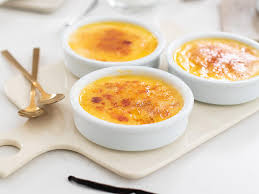

Home
Creme Brulee

Description
Crème brûlée is a classic French dessert consisting of a rich, creamy custard base, typically flavored with vanilla, topped with a contrasting layer of hardened caramelized sugar that shatters when tapped.
Ingredients
- 500ml (2 cups) heavy cream
- 1 vanilla bean, split lengthwise, or 2 teaspoons vanilla extract
- 4 large egg yolks
- 60-80g (1/4 - 1/3 cup) granulated sugar, plus extra for topping
- Pinch of salt
Steps
TBC